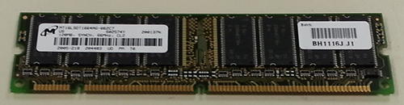

Virtual Computer Tour
Stop #2: Memory
The terms RAM and Memory are used interchangeably to refer to chips that the computer uses to keep track of the data your computer is currently using.

RAM stands for Random Access Memory, which refers to a way of storing and retrieving data on the chip. You can think of RAM like a set of cubbies that you might use in an office on the wall, where you can put something temporarily then find it again easily when you need it later.
Because the computer is constantly moving data in and out of RAM, data is added to RAM in random empty locations, and the CPU keeps track of where specific data is stored using addresses that correspond to specific blocks (or registers) in the RAM chip. The CPU can then easily find data stored in RAM by knowing the address where it is stored.
Data moves through RAM on its way to the CPU, sort of like people waiting in line to get into a theater or other event. Data is also stored in RAM after it has been processed by the CPU, in case the CPU needs to use the data again. However, RAM requires power to store data, so when the computer is turned off, everything in RAM is erased. This is why it is very important to save files like Word documents frequently as you work on them.
Newer devices--especially smart phones and tablets--are more likely to use flash memory than traditional RAM chips, and it is likely that this technology will eventually be added to desktop computers and notebooks as a regular feature in the future. More detail will be given about flash memory later in the tour, but it has an advantage of being able to retain data even when the power is off. Today, though, flash memory is considerably more expensive than RAM chips, and most computer manufacturers prefer to keep the cost of the device lower by using RAM.
Click the button below to find out more about the CPU!